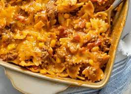

Sloppy Joe Casserole

Description
This is a great comfort food recipe that I love to make on a cold winter day. It is also a hit at our church's potluck dinners.
Ingredients
- Ground beed
- Onion, Chopped
- Green bell pepper, Chopped
- Red bell pepper, Chopped
- Clove garlic, Chopped
- Diced tomatoes
- Ketchup
- Brown sugar
- Yellow mustard
- Salt and black pepper, To taste
- Whole-kernel corn
- Penne pasta
- Colby-Jack cheese
Steps
- Preheat oven to 350 degrees F (175 degrees C).
- Heat a large skillet over medium-high heat. Cook and stir beef, onion, green bell pepper, red bell pepper, and garlic in the hot skillet until beef is browned and crumbly, 5 to 7 minutes; drain and discard grease.
- Stir tomatoes, ketchup, brown sugar, mustard, salt, and pepper into ground beef mixture; reduce heat and simmer until heated through, about 10 minutes.
- Bring a large pot of lightly salted water to a boil. Cook corn in the boiling water until cooked through, about 5 minutes; drain.
- Bring a large pot of lightly salted water to a boil; add penne and cook, stirring occasionally, until tender yet firm to the bite, about 11 minutes. Drain.
- Mix corn, pasta, and Colby-Jack cheese into ground beef mixture; pour into a 9x13-inch baking dish.
- Bake in the preheated oven until heated through and cheese is melted, about 20 minutes.